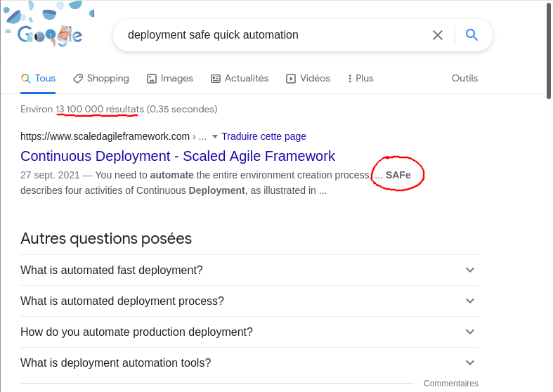
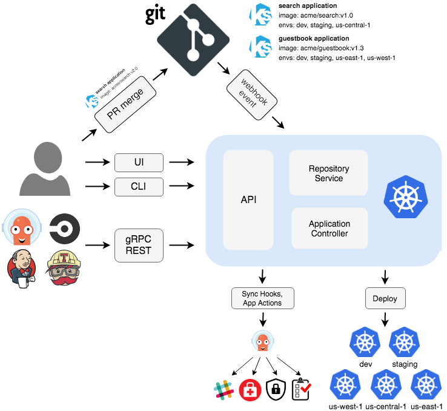
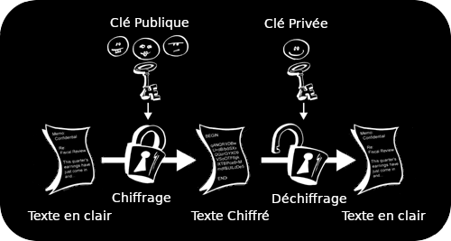

Le GitOps dont vous êtes le héros
Une collection Folio DevOps
Revue des lecteurs sur https://github.com/louiznk/gitops-heros-sunny/issues
 |
| Louis Tournayre @ Zenika Lyon & GDG Cloud & IoT Lyon |
Notre histoire commence par une crise...
Il était une fois une application que nous appellerons le site (et pas le sith)
Mais ce site est défectueux, les utilisateurs ne sont pas contents, la direction est inquiète...
Table ronde des équipes
Séances de brainstorming des différentes équipes pour trouver des solutions.💡 Comment avoir moins de bugs ?
- des livraisons avec moins de choses,
- du temps pour effacer la dette technique<./li>
Pour que ce soit le plus efficient, il faut que les déploiements soient un non-évenement.
💡 Comment rendre les déploiements ?
Fiable, Rapides, Automatisés, 🎁 ...
Il faut revoir le processus de mise en production 😰
Chercher des idées :
Perdu ?
Vous n'avez rien à faire làLa taverne
Vous rencontrez vos amis Gandalf et Gimli au ☕. Ils vous proposent la solution suivante :
- packager et distribuer l'application via des images docker
- et le déployer dans kubernetes en utilisant les principes GitOps.
Mais c'est quoi GitOps ?...
Pour en savoir plus : rendez-vous au meetup du coin
Let Me Google That
Trop de pistes... se rendre à la taverne
Une présentation de Legolas sur GitOps à un petit meetup
Malheureusement, vous arrivez vers la fin de la présentation de Legolas, vous pouvez discuter d'abord avec lui (A) ou aller directement au moment d'échange post meetup (B)Un petit tutoriel de prise en main
Legolas vous propose un cours de rattrapage en forme de quizz (les bonnes réponses sont primées)
GitOps c'est quoi d'après vous ?
Fail 🎃
Aller à l'épreuve 2
Win 💪
Aller à l'épreuve 2
Quelles sont les 2 premiers principes GitOps ?
- A: Le principe, c'est de faire des valeurs
- B: On ne passe les commandes Git qu'en ligne de commande
- C: Git est la seul source de vérité
- D: Chaque branche Git correspond à un environnement différent
- E: Tout est décrit via des fichiers de manifest
- F: Le monde se divise en deux catégories : ceux qui ont un pistolet chargé et ceux qui creusent. Toi, tu creuses. ⛏️
Aller à l'épreuve 3
Fail 🎃
revenir ou aller à l'épreuve 3
Win 💪
revenir ou aller à l'épreuve 3
Win 💪
revenir ou aller à l'épreuve 3
Qu’est ce qui est décrit dans nos repo Git ?
Fail 🎃
Aller à l'épreuve 4Win 💪
Aller à l'épreuve 4Est-ce que je peux opérer mon infrastructure sans passer par Git ?
Fail 🎃
Aller à l'épreuve 5Win 💪
Aller à l'épreuve 5Qu'est ce qui se passe si j'ai mis les doigts dans l'infrastructure ?
Fail 🎃
Aller au moment d'échange post meetupWin 💪
Aller au moment d'échange post meetupAu final GitOps c'est...
Un repo pour les gouverner tous. Un repo pour les détailler. Un repo pour les amener tous et dans kube les déployer....
La taverne
Vous vous attablez avec Gimli, Legolas et si vous avez passé le niveau 1, vous avez droit à une 🍻.
Vous leur demandez de l'aide pour mettre en place GitOps dans votre projet.
- A: Legolas vous propose son arme favorite : Argo CD
- B: Alors que Gimli vous conseil d'utiliser votre forge pour faire votre arme sur mesure
Dans tous les cas, Gandalf vous rejoint et vous offre un cluster kube pour pouvoir déployer, pour le remercier, c'est votre tournée [PAYEZ 3 🪙].
Argo CD
Argo CD is a declarative, GitOps continuous delivery tool for Kubernetes.https://argoproj.github.io/cd

Votre première mission
- installer et configurer Argo CD,
- s'assurer que la ligne de commande fonctionne,
- s'assurer que l'interface web est accessible au travers d'un Ingress.
Après avoir résolu cette issue, passer à la prochaine
Du "sur-mesure" avec la CI de GitLab
Votre première mission
- installer et configurer un runner GitLab (pour le "groupe" gitlab) qui tourne dans le cluster,
- s'assurer que le runner fonctionne,
- permettre au runner de piloter le cluster k8s.
Après avoir PARTIELLEMENT cette issue, passer à la prochaine
Déployer en production des descripteurs versionnés
Allons nous enfin pouvoir déployer la production à partir du repository git ? 🤞
Go to prod un vendredi 😱 ?
L'équipe dev vous a fournit les manifests pour déployer l'Application dans la nouvelle infrastructure.
Après avoir résolu cette issue, passer à la prochaine
Et si l'on déployé d'autres environnements ?
👯♂️
Maintenant que vous savez déployer en production directement depuis git
Comment gère-t-on les autres environnements ?
Aller trouver l'inspiration à la taverne...
Quel modèle de configuration pour gérer nos différents environnements ?
Après avoir offert plusieurs 🍺 au barde [PAYEZ 2 🪙], il vous propose de suivre la voie de :
- A: Kustomize, le guerrier Nain qui refuse le templating
- B: Helm, le Démon du templating go
- C: Dhall, le Béornien qui compile vos configurations
Qui sera votre modèle ?
Kustomize
Une approche déclarative et sans template.
├── base │ ├── deployment.yml │ ├── ingress.yml │ ├── kustomization.yml │ └── svc.yml └── overlays ├── moria │ ├── patch.yml │ └── kustomization.yml ├── erebor │ ├── ...
Kustomize
Contenant les définitions de "base" et le(s) patch(s) de chaque environnement
Les mains dans le cambouis : Kustomize
Après avoir résolu cette issue, passer à la prochaine
Helm
The package manager for Kubernetes(https://helm.sh/)
L'enfer est pavé de bonnes intentions(Saint-Bernard)
Helm, c'est à la fois un système de :
- templating go pour yaml,
- un système de packaging et de partage d'applications kubernetes,
- et un système de gestion de dépendances pour les applications kube.
Helm
Un Chart helm cela ressemble à quoi ?├── charts ├── Chart.yaml ├── templates │ ├── deployment.yaml │ ├── _helpers.tpl │ ├── hpa.yaml │ ├── ingress.yaml │ ├── NOTES.txt │ ├── serviceaccount.yaml │ ├── service.yaml │ ├── tests │ └── test-connection.yaml ├── values-prod.yaml ├── values-staging.yaml └── values-....yaml
H🔥lm
Les mains dans le cambouis : H🔥lm
Après avoir résolu cette issue, passer à la prochaine
Dhall-lang
Dhall is a programmable configuration language...(https://dhall-lang.org/)
Dhall-lang est un langage de configuration générique :
- avec des types dédiés pour les descripteurs de kubernetes,
- safe (fonctionnel, typage, ...),
- qui évite les répétions et facilite la refactorisation,
- mais plus difficile à apprendre que Helm ou Kustomize.
Dhall-lang
Du typage, du templating et un peu d'assemblage├── assembly-prod.dhall ├── assembly-secret.dhall ├── assembly-....dhall ├── configs │ ├── prod.dhall │ ├── staging.dhall │ └── ....dhall ├── templates │ ├── sith-all-template.dhall │ ├── sith-deploy-template.dhall │ ├── sith-ingress-template.dhall │ └── sith-svc-template.dhall ├── tools │ └── converters.dhall └── types ├── sith-config-deploy.dhall ├── sith-config.dhall ├── sith-config-ingress.dhall ├── sith-config-ingress-rule.dhall ├── ... ├── sith-config-svc.dhall └── unionType.dhall
Dhall-lang
Mise en oeuvre d'un template simple (un service)
Dhall-lang
Utilisation de ce simple template(un service)
$ dhall-to-yaml --documents --file assembly-demo.dhall
---
apiVersion: v1
kind: Service
metadata:
labels:
app: hello
name: hello
spec:
ports:
- port: 80
targetPort: web
selector:
app: hello
Dhall-lang : comment déployer ?
Pour résoudre cette issue vous allez avoir besoin d'invoquer l'aide d'un consultant Béornide.
Ce puissant guerrier :
- mettra en place les types, descripteurs et templates Dhall,
- et intégrera Dhall dans votre solution de déploiement.
Si vous ne les avez pas faites un autre choix
Les mains dans le cambouis : trois tournées pour qu'ArgoCD intègre Dhall
ArgoCD ne comprend pas Dhall.... Mais notre amis Béornide peut lui "apprendre" en créant un CMP (Config Management Plugin). Cela consiste à :
- installer le plugin via "side-car container" associé à argo-repo-server,
- configurer ce plugin pour qu'il traite les fichiers dhall,
- configurer ArgoCD pour qu'il délègue les fichiers dhall à ce plugin.
Après avoir résolu cette issue, passer à la prochaine
L'application présente des F🎃illes de sécurité
Entre autres, les secrets sont directement dans l'application.
Demander à Gandalf s'il connaît un sort d'externalisation des mots de passe
La voie du silence
Heureusement, Gandalf est là et vous donne plusieurs directions, choisissez bien...Les "Secret" selon Kubernetes 🤡
🚨 Encoder n'est pas chiffrer
---
apiVersion: v1
data:
password: RW5jb2RlciBuJ2VzdCBwYXMgY2hpZmZyZXI=
kind: Secret
metadata:
name: it-s-a-joke
Après avoir fait semblant de résoudre cette issue, passer à la prochaine
Sealed Secrets
La sécurisation des secrets grâce à du chiffrement asymétrique.

Après avoir résolu cette issue, passer à la prochaine
Hashicorp Vault
On peut utiliser Vault=> Depuis l'endroit qui déploie grâce à <=
- du templating,
- des générateurs,
- ...
=> Ou depuis le cluster où les secrets sont utilisés en <=
- utilisant un "Init" ou un "SideCar" Containers,
- intégrant un client Vault dans l'application,
- utilisant "Secrets Store CSI driver" de kube.
Même si c'est la meilleure solution, vous n'avez pas encore le niveau pour cette epic.
Ce sera l'objet d'une autre aventure dont vous serez le héros...
Déployer la prod sur un tag au lieu de HEAD
Il s'agit de la dernière issue. Elle est optionnelle :
Fin du premier tome
Merci à vous 🤗
Références 📖
- ArgoCD : https://argo-cd.readthedocs.io/en/stable/
- GitLab Runner pour K8S : https://docs.gitlab.com/runner/install/kubernetes.html
- Helm : https://helm.sh/
- Kustomize : https://kustomize.io/
- Dhall : https://dhall-lang.org/
- dhall-kubernetes: https://github.com/dhall-lang/dhall-kubernetes
- Civo : https://www.civo.com/kubernetes
- k3d : https://github.com/k3d-io/k3d/
- Présentation & code : https://github.com/louiznk/gitops-heros-sunny
- Deploy Sith : https://github.com/louiznk/deploy-sith.git